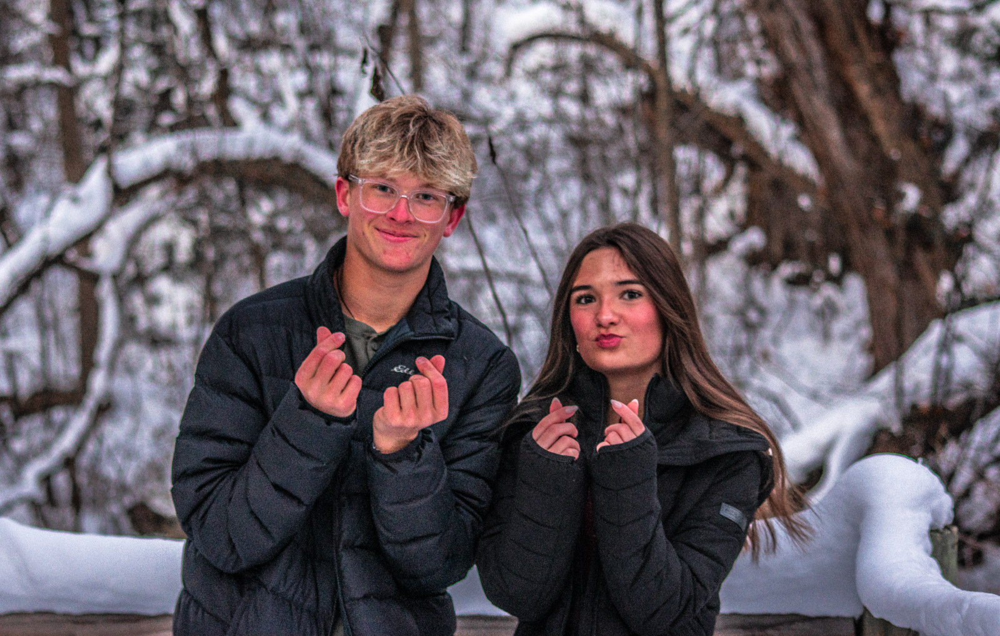
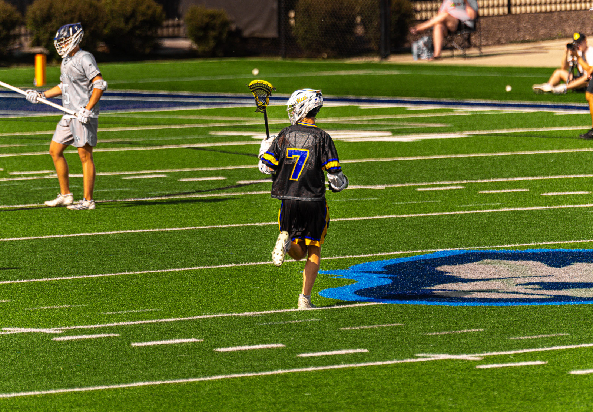

About Me
Building stories
through photography
and design.
I'm Isaac Motl, a photographer and web designer based in Wisconsin. My goal is to help people and businesses stand out through authentic photography and modern websites.

My Story
Passion turned into purpose.
Photography started as a way to meet new people and get out of my comfort zone. Being able to take pictures almost anywhere I go and see the landscape differently from other people makes me feel joy and passion for the pictures I shoot. In the end of the day making people happy with my photos brings me the most joy and memories I can not forget.
What I Believe
Good work comes from attention to detail.
Quality
Every project is built with care, whether it's one portrait or an entire website.
Creativity
I enjoy solving problems through thoughtful design and photography.
Growth
I'm constantly learning new skills to provide more value to every client.
Relationships
Great projects begin with understanding the people behind the business and the camera.
Beyond Work
Always exploring.
When I'm not building websites or taking photos, you'll usually find me outdoors exploring state parks, working out, playing lacrosse, fishing, or hanging out with the people I love most.

Skills
What I bring to every project.
My work combines photography, web design, branding, SEO, responsive development, automation, and business-focused thinking to create personal and profesional experiences that leave a lasting impression on anyone that views my work.